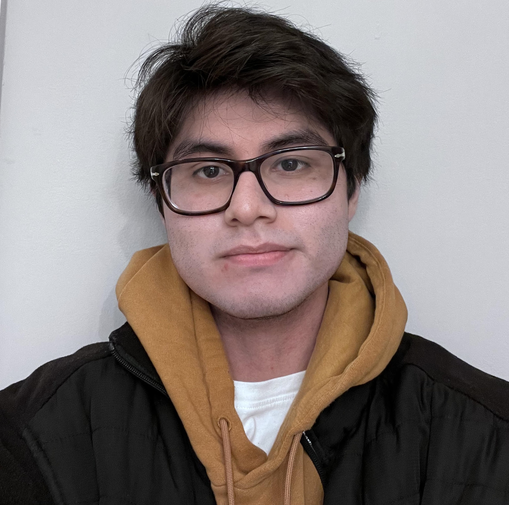

About The Team
 Jake Perelman
I’m a senior Computer Science student. I enjoy building things that blur the lines between logic and creativity whether that’s a game, tool, or some random idea. When I’m not behind a screen, you’ll find me on the golf course or fishing.
Jake Perelman
I’m a senior Computer Science student. I enjoy building things that blur the lines between logic and creativity whether that’s a game, tool, or some random idea. When I’m not behind a screen, you’ll find me on the golf course or fishing.

Axel Zubieta I'm a Computer Science major interested in exploring the evolving capabilities of Virtual Reality development. I enjoy playing the bass clarinet and creating virtual reality simulations involving music is something I want to learn more about. Bhargav Gudapati
I am a fourth year computer science major, minoring in business. I enjoy walking my dog and bird watching (especially geese, they are fun to watch) and playing piano sometimes.
Bhargav Gudapati
I am a fourth year computer science major, minoring in business. I enjoy walking my dog and bird watching (especially geese, they are fun to watch) and playing piano sometimes.